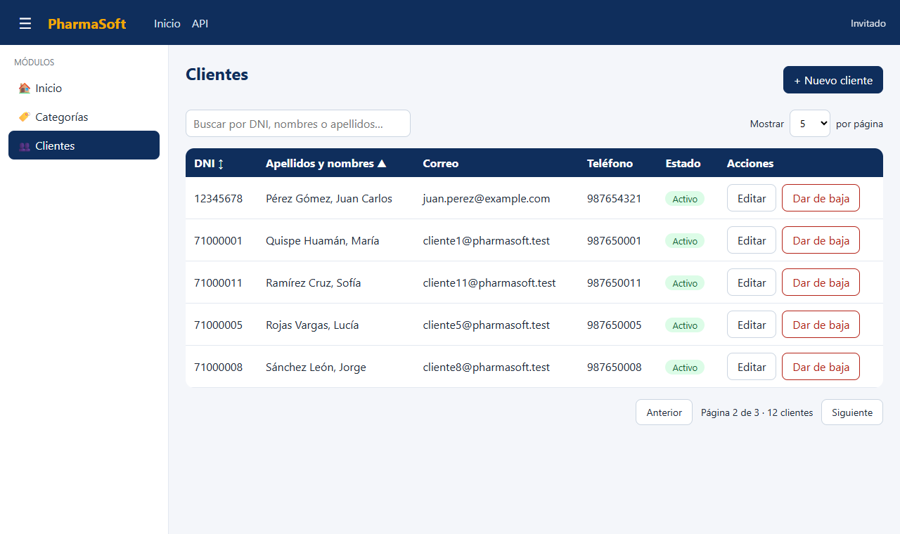
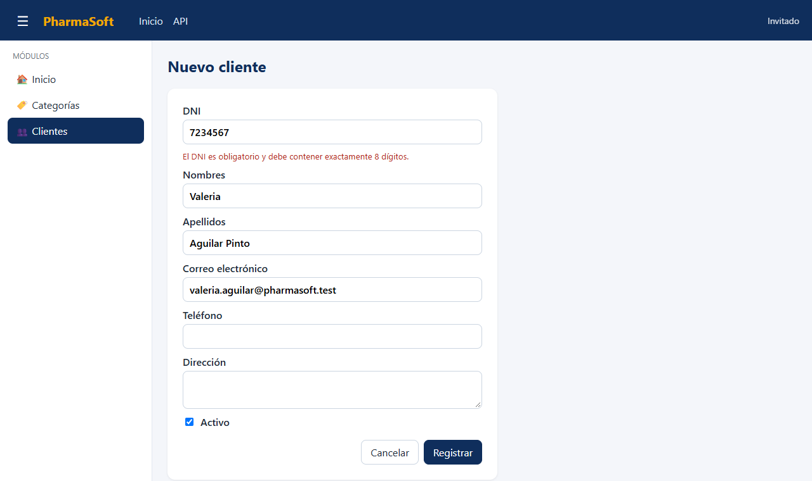
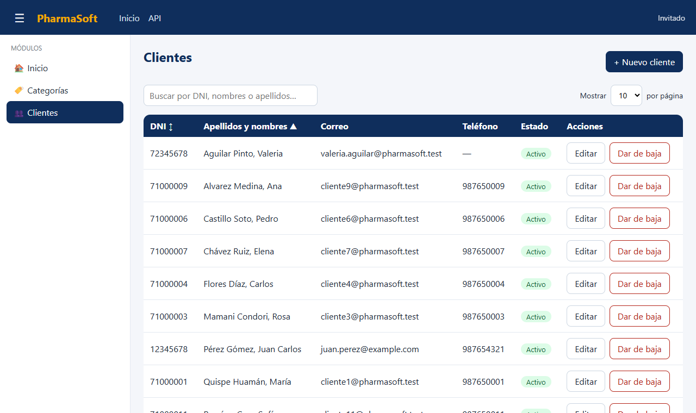
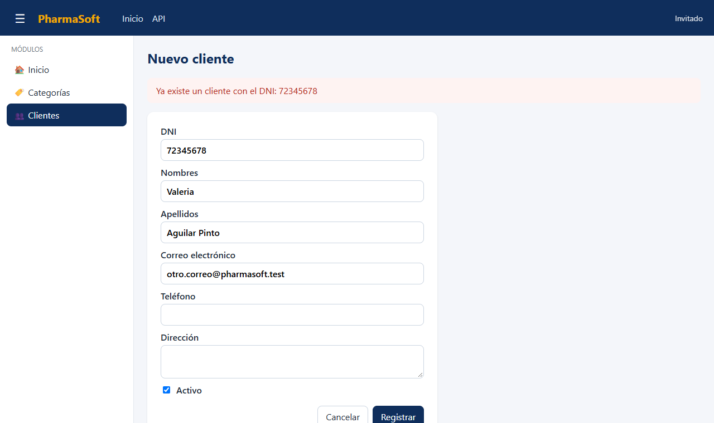
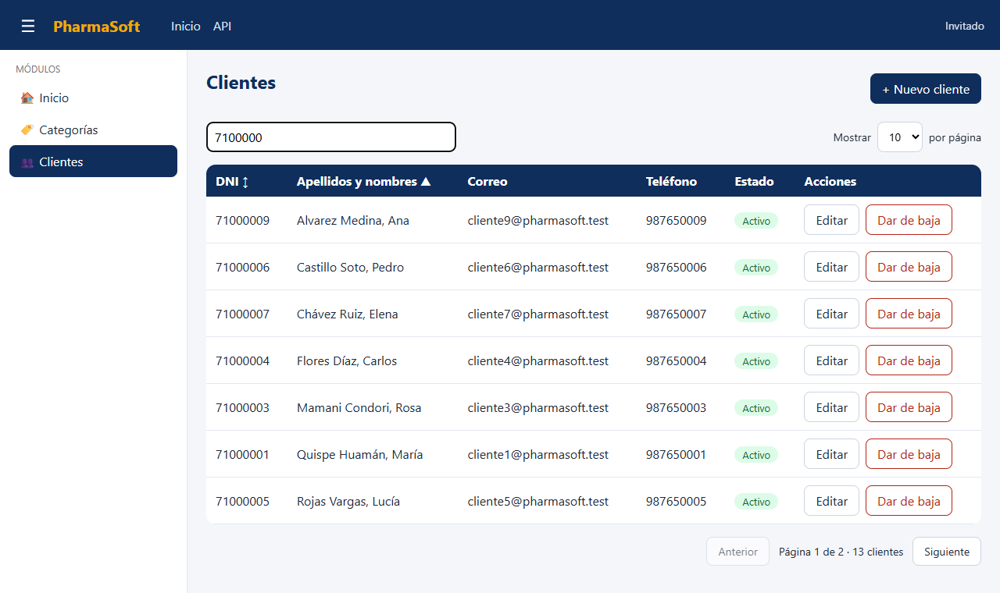
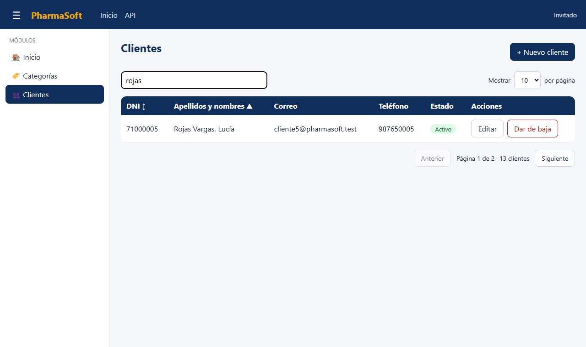
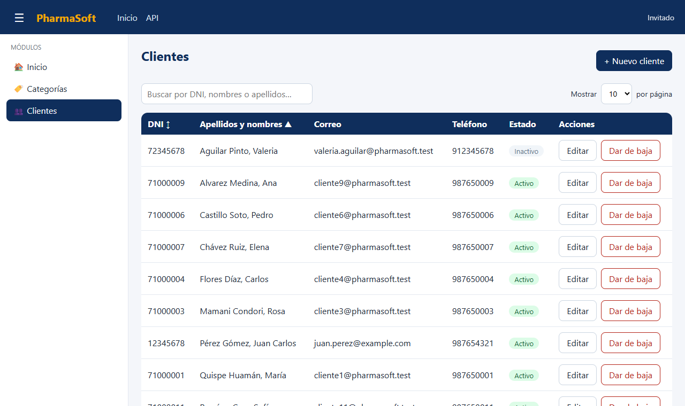
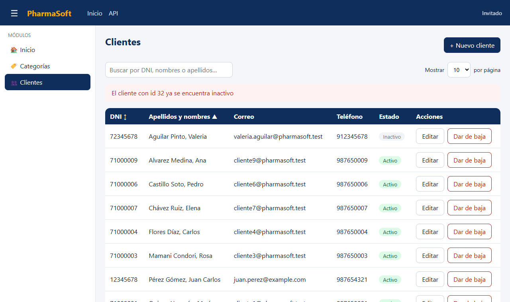
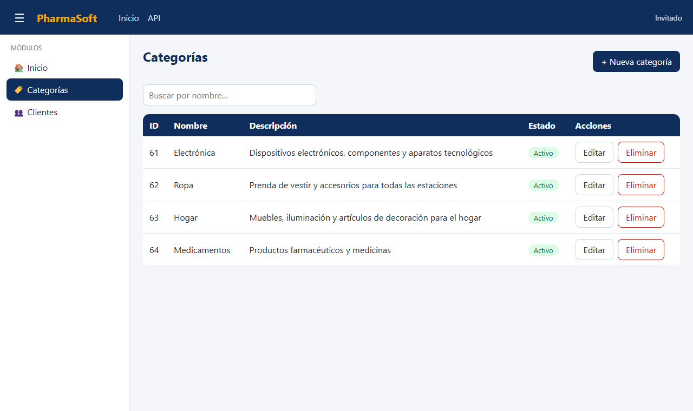

feature/clientes-tineo ·
Pull request hacia develop: https://github.com/Legends600/pharma-frontend/pull/1
Este informe revisa la arquitectura de PharmaSoft (Angular 22) después de agregar el módulo Clientes
sobre la base construida en el Reto 01 (Categorías). Todas las citas usan el formato
archivo:línea y corresponden al código de la rama feature/clientes-tineo.
src/app
├── app.config.ts · app.routes.ts · app.ts
├── core/
│ ├── config/menu.ts
│ ├── models/error-response.ts
│ ├── models/pagina-response.ts (nuevo)
│ └── utils/http-error.ts
├── shared/pages/no-encontrado/no-encontrado.ts
├── layout/
│ ├── main-layout/ (ts, html, css)
│ ├── header/ (ts, html, css)
│ └── sidebar/ (ts, html, css)
└── features/
├── inicio/ (ts, html)
├── categorias/
│ ├── categorias.routes.ts
│ ├── models/categoria.model.ts
│ ├── services/categoria-service.ts
│ └── pages/categoria-list/ · categoria-form/
└── clientes/ (nuevo)
├── clientes.routes.ts
├── models/cliente.model.ts
├── services/cliente-service.ts
└── pages/cliente-list/ · cliente-form/
core contiene piezas únicas para toda la aplicación y sin interfaz: la configuración del menú
(MENU), los modelos comunes que reflejan DTO genéricos del backend (ErrorResponse,
PaginaResponse<T>) y utilidades como mensajeError(). Ningún archivo de core
conoce un módulo de negocio concreto.
shared guarda componentes y páginas reutilizables que no pertenecen a un módulo, por ahora la
página 404. layout es el marco visual fijo (encabezado, menú bar, sidebar y el contenedor
MainLayout). features tiene una carpeta por tabla o proceso del negocio; cada una repite
la misma forma interna: models (contrato con la API), services (HTTP),
pages (pantallas) y su propio archivo de rutas. Por eso Clientes es una carpeta
nueva con exactamente la misma estructura que Categorías.
| Ruta (URL) | Componente | ¿Ruta padre? | Tipo de carga | Título |
|---|---|---|---|---|
/ | — (redirige a /inicio) | MainLayout | redirectTo, pathMatch full | — |
/inicio | Inicio | MainLayout | loadComponent (diferida) | Inicio |
/categorias | CategoriaList | MainLayout | loadChildren (diferida) → CATEGORIAS_ROUTES | Categorías |
/categorias/nuevo | CategoriaForm | MainLayout | loadChildren (mismo chunk) | Nueva categoría |
/categorias/:id/editar | CategoriaForm | MainLayout | loadChildren (mismo chunk) | Editar categoría |
/clientes | ClienteList | MainLayout | loadChildren (diferida) → CLIENTES_ROUTES | Clientes |
/clientes/nuevo | ClienteForm | MainLayout | loadChildren (mismo chunk) | Nuevo cliente |
/clientes/:id/editar | ClienteForm | MainLayout | loadChildren (mismo chunk) | Editar cliente |
/** | NoEncontrado | No (fuera del layout) | loadComponent (diferida) | Página no encontrada |
Fuente: app.routes.ts:4-33, categorias.routes.ts y clientes.routes.ts.
El parámetro :id llega al formulario como input() gracias a withComponentInputBinding() en app.config.ts.
| Pieza | Tipo | Responsabilidad | Qué no hace |
|---|---|---|---|
| CategoriaService | Servicio | Único punto que conoce /api/v1/categorias; expone listar, obtener, crear, actualizar y eliminar como Observable tipados. | No guarda estado, no muestra mensajes, no navega ni decide qué hacer ante un error. |
| CategoriaList | Componente | Mantiene en signals la lista, carga, error y filtro; filtra con computed; confirma y elimina quitando la fila localmente. | No arma URL ni usa HttpClient; no valida datos de negocio (eso lo hace el backend). |
| CategoriaForm | Componente | Formulario reactivo para registrar y editar (según exista id); valida como el DTO y muestra errores 400/409. | No lista categorías ni conoce la URL; no decide si el nombre está repetido (lo responde el backend con 409). |
| ClienteService | Servicio | Comunicarse con /api/v1/clientes; listar() arma HttpParams (página, tamaño, orden, dirección) y devuelve PaginaResponse<Cliente>. | No muestra mensajes ni navega entre páginas; no guarda la página actual ni filtra por texto. |
| ClienteList | Componente | Guarda en signals página, tamaño, campo y dirección de orden; un effect vuelve a llamar a listar() cuando cambian; pagina, ordena, filtra la página actual con computed y da de baja con confirmación, recargando la página. | No construye query strings ni conoce la URL; no elimina la fila de la tabla (la baja es lógica y el estado lo decide el backend). |
| ClienteForm | Componente | Registrar y editar con validadores equivalentes al ClienteRequestDTO; convierte opcionales vacíos en null; muestra errores del backend por campo y generales. | No comprueba si el DNI o el correo existen (409 del backend); no actualiza la tabla directamente: navega al listado, que vuelve a consultar. |
| MainLayout | Componente | Une encabezado, sidebar y <router-outlet> con CSS Grid; guarda el signal menuColapsado. | No sabe qué módulos existen ni carga datos; no dibuja el contenido de cada página. |
| Header | Componente | Muestra la marca, el menú bar y emite toggleMenu con output(). | No oculta el sidebar por sí mismo; solo avisa y el layout decide. |
| Sidebar | Componente | Recorre MENU con @for y resalta la opción activa con routerLinkActive. | No define las opciones (están en menu.ts) ni las rutas (están en app.routes.ts). |
| http-error.ts | Utilidad | Traduce cualquier HttpErrorResponse a un texto legible y extrae validationErrors. | No muestra el mensaje; cada componente decide dónde pintarlo. |
Código del flujo: cliente-form.ts:65-94 (validación, dto con || null en líneas 76-77,
subscribe con next en línea 87 y error en líneas 88-92) y cliente-list.ts:48-57 (el effect que vuelve a consultar).
En los casos 5 y 6 del anexo se observa cada variante con su código HTTP.
app.routes.ts (líneas 20-24, la ruta clientes con
loadChildren) y core/config/menu.ts (línea 10, una sola línea en MENU). Además se agregó un archivo
nuevo en core, core/models/pagina-response.ts, y la carpeta features/clientes. git diff develop..feature/clientes-tineo
no muestra ningún cambio en features/categorias ni en layout. El número dice que la arquitectura está
abierta a la extensión y cerrada a la modificación: crecer significa agregar archivos, no reescribir los que ya funcionan.ClienteList solo inyecta ClienteService (cliente-list.ts:19)
y le pide datos con parámetros de negocio (página, orden). La URL existe en un único lugar: la base en environments/environment.ts:2
y el recurso en cliente-service.ts:11. Si mañana cambia la URL de la API se edita environment.ts (o una línea del servicio si
cambia el recurso) y ningún componente se toca. Además el componente puede probarse sustituyendo el servicio por uno falso.loadChildren. El código de Clientes se empaqueta en un chunk aparte que el navegador descarga solo al entrar a
/clientes, así la carga inicial no crece con cada módulo. Salida de ng build:chunk-BTt5Y0il.js | clientes-routes | 12.25 kB | 3.77 kBmain, 265.94 kB) no incluye ClienteList ni ClienteForm. Si se importaran los componentes en
app.routes.ts, pasarían al chunk main y todos los usuarios los descargarían aunque nunca entren al módulo./categorias y /clientes son hijos de la
misma ruta padre con component: MainLayout (app.routes.ts:6-8). Al navegar entre hermanos, el router reutiliza la
instancia de MainLayout y solo cambia lo que hay dentro de su <router-outlet /> (main-layout.html:5);
<app-header> y <app-sidebar> (líneas 2-3) quedan fuera del outlet. Por eso el signal menuColapsado conserva su valor.core/config/menu.ts: agregar a MenuItem
un campo como permisos?: string[] y filtrar MENU con los permisos del usuario (por ejemplo un computed que
Sidebar recorre en lugar del arreglo fijo, sidebar.ts). Basta con ese punto para el menú porque el sidebar nunca escribe
opciones a mano, las obtiene solo de MENU. Ocultar no es proteger: además hará falta un guard en la ruta clientes de
app.routes.ts y la validación del JWT en el backend.obtener/crear/actualizar/eliminar son
iguales en categoria-service.ts y cliente-service.ts, solo cambia el recurso); (b) en los listados, los signals
cargando/error/filtro y el manejo de subscribe con mensajeError; (c) en los formularios, el flujo
guardar() crear-o-actualizar, la alerta y los mensajes por campo, y el CSS del formulario (mismas reglas en
categoria-form.css y cliente-form.css). Propuesta: una clase genérica CrudHttpService<T, TReq> en
core que reciba el recurso y de la que hereden ambos servicios; componentes en shared como <app-alerta>,
<app-paginador> (que emita cambios de página y tamaño, reutilizable en productos y ventas) y <app-badge-estado>;
y mover los estilos de formulario a styles.css.computed filtrados (cliente-list.ts:36-42)
trabaja sobre respuesta()?.contenido, que solo contiene los N registros de la página que devolvió el backend; los demás
clientes nunca llegaron al navegador. Para buscar entre todos, el backend debe aceptar un parámetro, por ejemplo
?buscar=texto, y filtrar en la consulta paginada (un método de repositorio o una Specification con
LIKE sobre dni, nombres y apellidos, sin distinguir mayúsculas) antes de paginar, para que
totalElementos y totalPaginas correspondan a los resultados. En ClienteService.listar() se agregaría
.set('buscar', texto) a los HttpParams, y en ClienteList el filtro pasaría a ser un parámetro más del
effect (con un pequeño retardo para no consultar en cada tecla) y volvería a la página 0 al cambiar.Flujo seguido: feature/spa-categorias-tineo se fusionó en develop y desde ahí se creó
feature/clientes-tineo, con los commits feat(clientes): listar clientes paginados con búsqueda por DNI,
feat(clientes): registrar y editar con validaciones y docs: agregar informe de arquitectura. La solicitud de incorporación
hacia develop es: https://github.com/Legends600/pharma-frontend/pull/1.
Capturas tomadas en Chrome sobre la SPA (localhost:4200) y Practica (localhost:8080) en ejecución, con
datos reales de Oracle. Debajo de cada captura figuran las peticiones HTTP a la API registradas durante ese caso (método, URL y código de respuesta).








